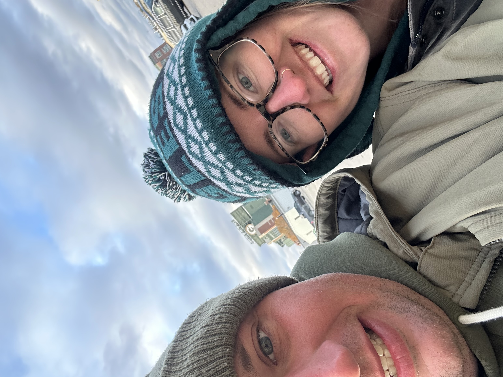

What I’m studying
My coursework has covered website structure with HTML, visual styling with CSS, interactive features with JavaScript, and publishing with GitHub Pages. I’ve also explored UX/UI principles, accessibility, and responsive design.
The person behind the pixels
I’m Brady Chamberlin, a student interested in information technology and network administration. I enjoy learning how things work and finding ways to make them work better for people.
Academic focus
I’m currently attending Lakeland College in Mattoon, Illinois, where I’m building a strong foundation in technology, problem-solving, and communication. My coursework is helping me develop skills that support my goals in IT support, network administration, and web-based technology work. At the moment, I’m also learning Windows Server and expanding my understanding of networking and server administration. I’m curious about AI and the different ways it can be applied in the real world to help where existing solutions fall short and make a meaningful difference in people’s lives.
My coursework has covered website structure with HTML, visual styling with CSS, interactive features with JavaScript, and publishing with GitHub Pages. I’ve also explored UX/UI principles, accessibility, and responsive design.
I value clear communication, thoughtful details, and steady progress. I’m comfortable asking questions, taking feedback, and iterating—because a first draft is a starting point, not a sacred artifact.
I enjoy website design, keeping up with cybersecurity trends, learning Windows Server, and exploring practical ways AI could help people when existing approaches fall short. I’m a Philadelphia Eagles fan, so I know a thing or two about loyalty, patience, and keeping perspective during a tense finish. My longer term goal is to explore digital forensics or a related path where technology can make a positive difference in people’s lives.
